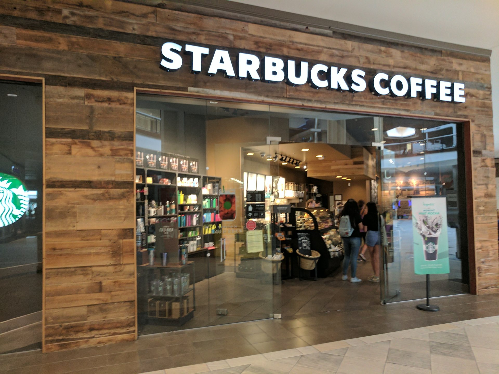

Incidents / Outage ·
Was the Starbucks Mobile Order & Pay outage a cyberattack?
Also reported as the Starbucks app outage and Starbucks app down.


Is it a hack? The short answer
Still unclearNot established. Starbucks said only that there was 'an issue' and gave no cause. No source reports an attack or a claim of one, but nothing has ruled one out.
How well supported Not established
Rests on No source reports a cyberattack on Starbucks · Starbucks has not said what caused the problem · Starbucks said it had 'an issue with Mobile Order & Pay' and apologized
This is the current answer, not a final verdict. A final verdict is published only after the site's owner has reviewed the evidence.
How much do you want to read?
The latest ·
Starbucks acknowledged a Mobile Order & Pay issue on Nov 20; no cause has been given and no source reports a hack.
Is it back?
Back. Reports started rising about 10 AM ET and were back near normal about 3 PM ET. evidence
How big is it?
Large. Starbucks Mobile Order & Pay is used across the US. The tracker's reports peaked at about 58 times normal for roughly five hours. Starbucks has not said how many customers or orders were affected.
Who is affected?
US customers who order or pay in the Starbucks app. Stores and drive-thrus stayed open. If you were charged for an order that never arrived, check your app history and ask Starbucks support.
Known so far
- Customers in the US saw errors, zero balances and failed payments in the Starbucks app on Friday, Nov 20. evidence
Not known yet
- What caused the problem. Starbucks has said only that there was an issue.
- Whether it was a cyberattack. No source reports one, and nothing has ruled one out.
- How many customers and orders were affected.
- Whether customers were charged for orders that failed, and how refunds will work.
- Whether Starbucks says service is fully restored.
The full story
- Nov 20Outage dayFriday, about 10 AM to 3 PM ET
- 58xPeak vs normal reportsOne tracker; not a count of customers
What caused it? Cause and hack claims
1
Not establishedStarbucks has not said what caused the problemNo source we found names a cause. Starbucks said only that there was an issue.
Why it supports KTEN reports only an unspecified 'issue' and IBTimes Australia says Starbucks had not explained what caused the problems.
Starbucks said only that there was 'an issue'. Nothing we found from the company, a regulator or an outside researcher gives a cause.
Was it a hack? What has been said
1
Not establishedNo source reports a cyberattack on StarbucksNo outlet, official or group we found says Starbucks was attacked, and no one has claimed it.
Why it supports Neither news report mentions an attack, a claim of responsibility or any security finding.
Absence of a report is not proof there was no attack. It means nothing public points to one yet.
Questions and rumors
4
Not establishedWas the Starbucks Mobile Order & Pay outage a cyberattack?Not established. Starbucks said only that there was 'an issue' and gave no cause. No source reports an attack or a claim of one, but nothing has ruled one out.
What would settle it A Starbucks statement of the cause, or an independent security finding.
Rests on No source reports a cyberattack on Starbucks · Starbucks has not said what caused the problem · Starbucks said it had 'an issue with Mobile Order & Pay' and apologized
Not establishedIs the Starbucks outage connected to this week's other outages?Not established. Officials say they found no evidence the week's outages were connected, and IBTimes Australia sees no sign of a link to Starbucks. That is second-hand and no cause has been published.
What would settle it Starbucks or an independent investigation naming the cause and any link to the other incidents.
Rests on Officials said this week they found no evidence the recent outages were connected or caused by a hostile actor · Starbucks has not said what caused the problem · The tracker shows several smaller Starbucks spikes earlier in November
UnverifiedWere customers charged for Starbucks orders that never went through?Unverified. Some customers say money left their balance without an order, but the accounts are unsigned tracker comments. Starbucks said refunds were temporarily unavailable.
What would settle it A Starbucks statement on charges and refunds, or reporting that checks customer receipts.
Rests on Some customers say money left their balance for orders that never went through · Stores and drive-thrus stayed open, and refunds for the problem were temporarily unavailable
ReportedIs the Starbucks app working again?Reported yes. The tracker shows reports back to their usual level by about 3 PM ET. Starbucks has not said service is fully restored.
What would settle it A Starbucks statement that service is restored.
Rests on Reports started rising about 10 AM ET and were back near normal about 3 PM ET
What happened?
3
ReportedStarbucks said it had 'an issue with Mobile Order & Pay' and apologizedKTEN reports that Starbucks apologized and acknowledged 'an issue with Mobile Order & Pay' in a statement on its website.
Why it supports KTEN quotes the acknowledgement and says it was in a statement on Starbucks' website; the second source is a republication of the same story, so it counts once.
We did not read Starbucks' own statement; KTEN and a republisher of its story relay it. An earlier IBTimes Australia report said Starbucks had not yet confirmed a problem, which was probably written before the statement. It stays Reported until Starbucks' own page is read or a second outlet quotes it.
ConfirmedStarbucks customers had errors, zero balances and failed payments in Mobile Order & Pay on Friday, Nov 20Customers in the US saw error messages, zero balances and payment failures in the Starbucks app on Friday, Nov 20.
Why it supports A news outlet, a second outlet citing an outage tracker, and the tracker itself describe the same symptoms independently of each other.
KTEN reported error messages and zero balances. IBTimes Australia cited Downdetector for a wave of reports, mostly about the app and sign-in. The Instatus tracker shows a spike and user comments about failed payments.
ReportedReports started rising about 10 AM ET and were back near normal about 3 PM ETThe Instatus tracker shows reports rising from 3 PM UTC (10 AM ET) and settling after about 5 hours.
Why it supports The tracker's outage page gives the 3 PM to 8 PM UTC window and its status page says reports were back at their usual level.
This is one automated tracker built from user reports, so times are approximate. Starbucks has not published a start or end time.
Timeline of the Starbucks outage
3
Tracker reports for Starbucks start to riseReported
The Instatus tracker shows reports rising from 3 PM UTC (10 AM ET) and settling after about 5 hours.
Why it supports The tracker's outage page gives the 3 PM to 8 PM UTC window and its status page says reports were back at their usual level.
This is one automated tracker built from user reports, so times are approximate. Starbucks has not published a start or end time.
Nov 20 Starbucks acknowledges 'an issue with Mobile Order & Pay' and apologizesReported
KTEN reports that Starbucks apologized and acknowledged 'an issue with Mobile Order & Pay' in a statement on its website.
Why it supports KTEN quotes the acknowledgement and says it was in a statement on Starbucks' website; the second source is a republication of the same story, so it counts once.
We did not read Starbucks' own statement; KTEN and a republisher of its story relay it. An earlier IBTimes Australia report said Starbucks had not yet confirmed a problem, which was probably written before the statement. It stays Reported until Starbucks' own page is read or a second outlet quotes it.
Tracker reports settle back to their usual levelReported
The Instatus tracker shows reports rising from 3 PM UTC (10 AM ET) and settling after about 5 hours.
Why it supports The tracker's outage page gives the 3 PM to 8 PM UTC window and its status page says reports were back at their usual level.
This is one automated tracker built from user reports, so times are approximate. Starbucks has not published a start or end time.
Who was affected?
3
ReportedThe tracker peaked at about 58 times its normal report rateInstatus recorded a peak of 3,451 reports an hour, about 58 times normal.
Why it supports The outage page states the peak rate and the multiple of normal.
Reports are not a count of affected customers or orders. The tracker's own earlier figure was 2,902 an hour (50 times normal), so the number moved while it was still being updated.
ReportedStores and drive-thrus stayed open, and refunds for the problem were temporarily unavailableA summary of the KTEN story says customers could still order in stores and drive-thrus, and that refunds tied to the problem were temporarily unavailable.
Why it supports The republished summary states both points and attributes them to KTEN.
We saw this only in the republished summary, not in KTEN's full text, which was cut short when we read it.
UnverifiedSome customers say money left their balance for orders that never went throughAnonymous tracker comments say funds were taken from app balances for orders the store never received.
Why it supports The tracker shows three comments describing failed orders after a charge; they are unverified user accounts.
These are unsigned comments on the tracker with no receipts. Starbucks has not confirmed any double charges.
What we checked and did not find
We looked for these and did not find them as of 8 PM ET on Nov 20, 2026.
- A Starbucks statement naming a cause.
- Any outlet, researcher or group saying Starbucks was attacked.
- A claim of responsibility.
- A government or regulator statement naming Starbucks.
- Starbucks' own page: we relied on KTEN's account of it.
The evidence
Every claim on this page, by label · 10
- Confirmed1
- Reported6
- Unverified1
- Not established2
Sources
5
- KTEN News: Starbucks reports an issue with mobile ordering and payment
- Beloud (republishing KTEN): Starbucks reports an issue with mobile ordering and payment
- IBTimes Australia: Starbucks down? Users report problems
- Instatus outage tracker: Starbucks outage on November 20, 2026
- Instatus outage tracker: Starbucks status and past outages
Update log
1
- Starbucks acknowledged a Mobile Order & Pay issue on Nov 20; no cause has been given and no source reports a hack. First draft. 5 sources (0 Tier 1), 10 claims (1 Confirmed, 6 Reported, 1 Unverified, 2 Not established), 4 questions. Starbucks' own statement was not read, so its acknowledgement is Reported. Checked: no cause, no attack claim, no regulator or researcher statement found. Not checked: Starbucks' social posts (cited by no outlet). Staleness check done. Privacy check done: no reporter names, handles or usernames.
The raw files
For people and programs that want the data itself. Nothing on this page exists only here.
This report as MarkdownThe data folder on GitHubEvery change to this page